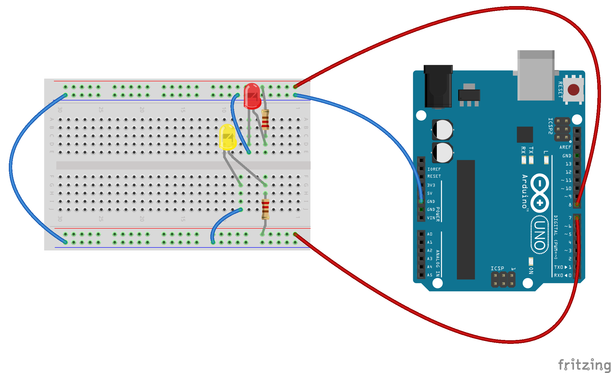
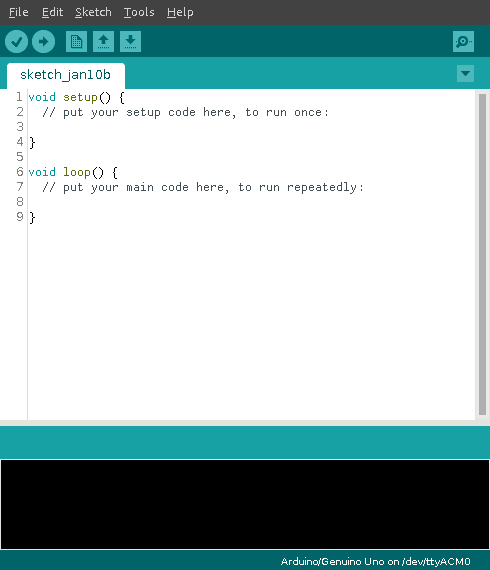
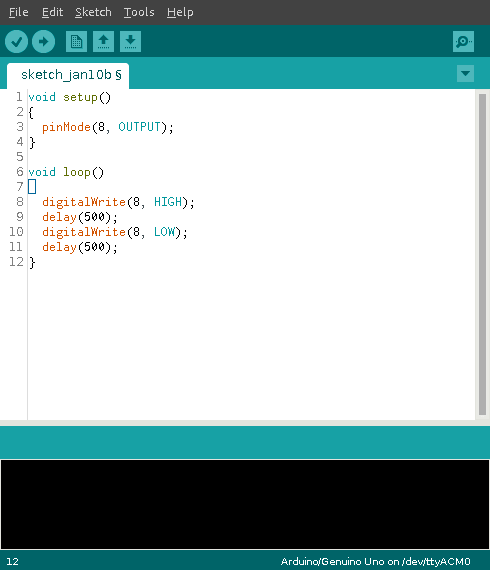

S.H.A. Chile 2016 - Arduino Lecture
Project maintained by molguin92
Hosted on GitHub Pages — Theme by mattgraham
Blinking LED circuit
What you need:
- 1 Yellow LED
- 1 Red LED
- 2 330 Ohm resistors
- 6 cables
Connect the components according to the following diagram:

Now, we are going to program the Arduino to make those LEDs blink when we want to. Go to the Start Menu and open the Arduino program. A window that looks like this will open:

Edit the code to look like this:

Finally, press the arrow button at the top to run the program on your Arduino (you'll have to save the project somewhere on the computer first though!).
Evaluation Questions:
- Why do we connect the LED to a numbered port on the Arduino, and not to the 5v output as before?
- What's the difference between the setup() and loop() sections of the program?
- How would you make the LED blink faster? Slower?
- How would you make the LED's blink alternately (first red, then yellow, and so on)?